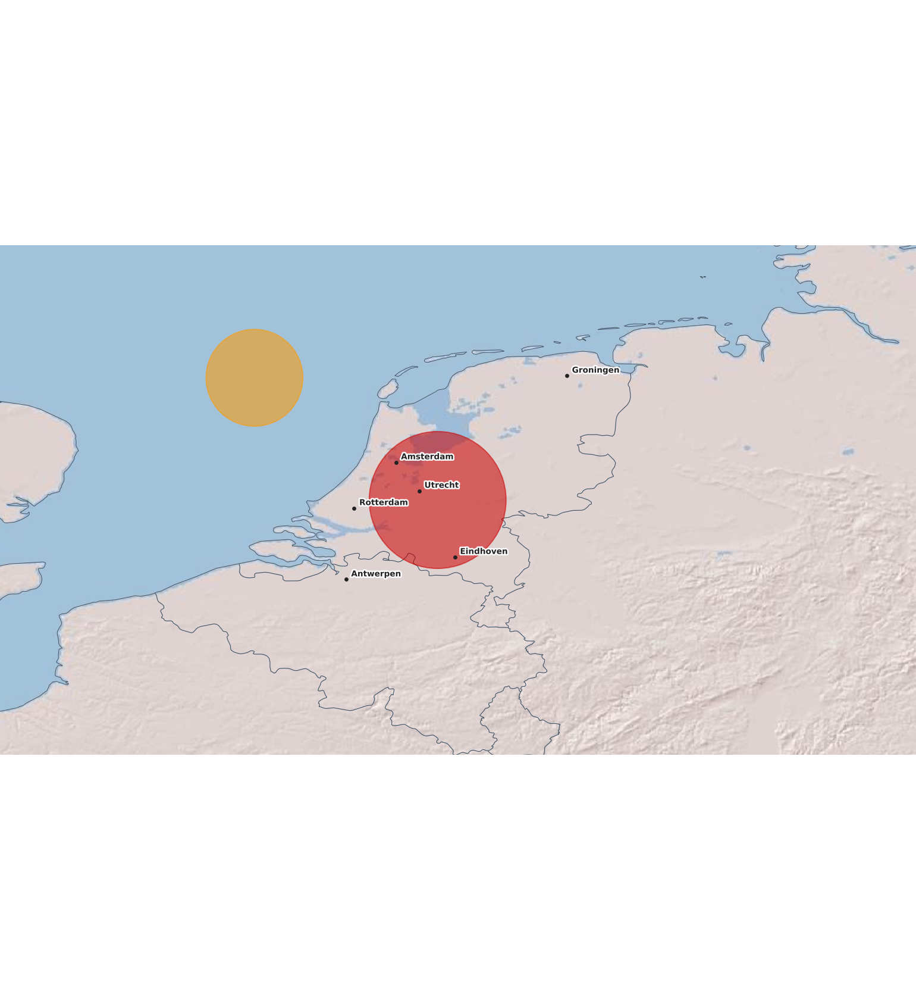
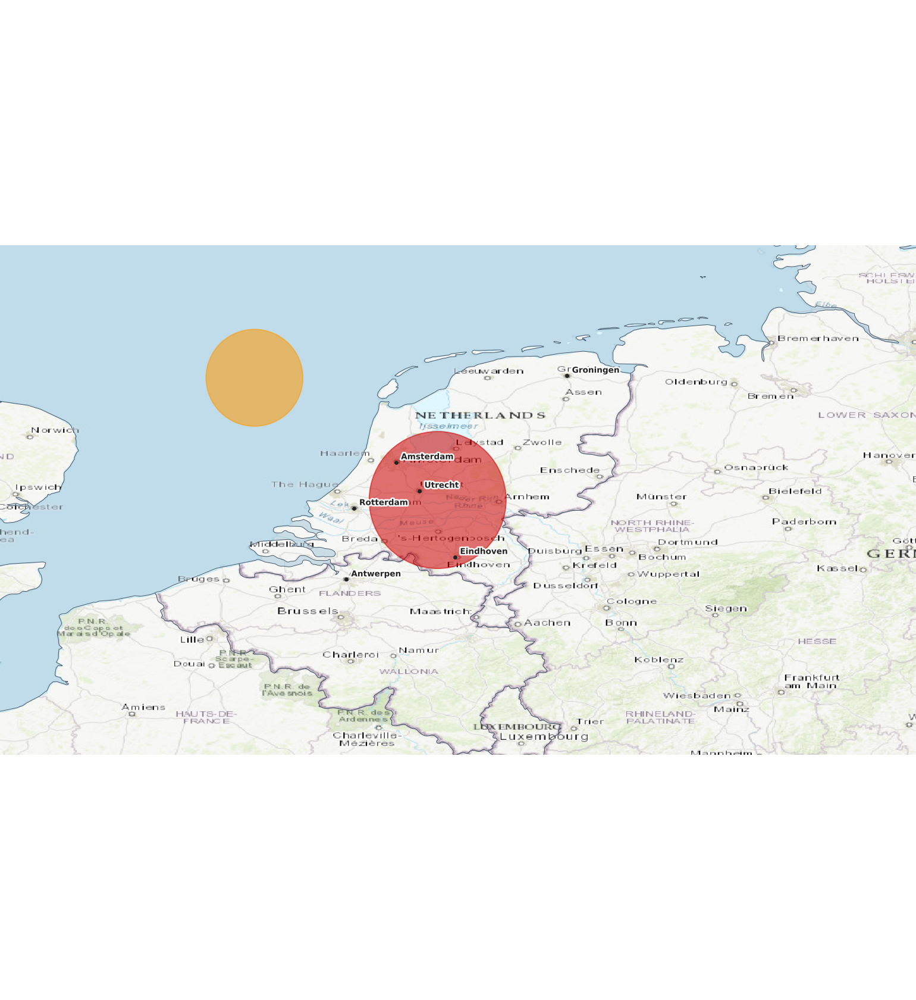

Topo-basemap — twee echte raster-opties
Echte topografische data via ESRI tiles, zelfde radar-bbox als
radar.html
. Demo-radarblob bovenop.
A · Shaded Relief (grijs reliëf)
Schaduw + lichte beige tinten. Reliëf zichtbaar in Ardennen / Duitsland. NL platte vlakte. Schoon.

B · World Topo (kleur + reliëf + labels)
Kleur (bos/akker/stad) + reliëf + steden + wegen. Lijkt op buienradar.nl-stijl. Drukker.
